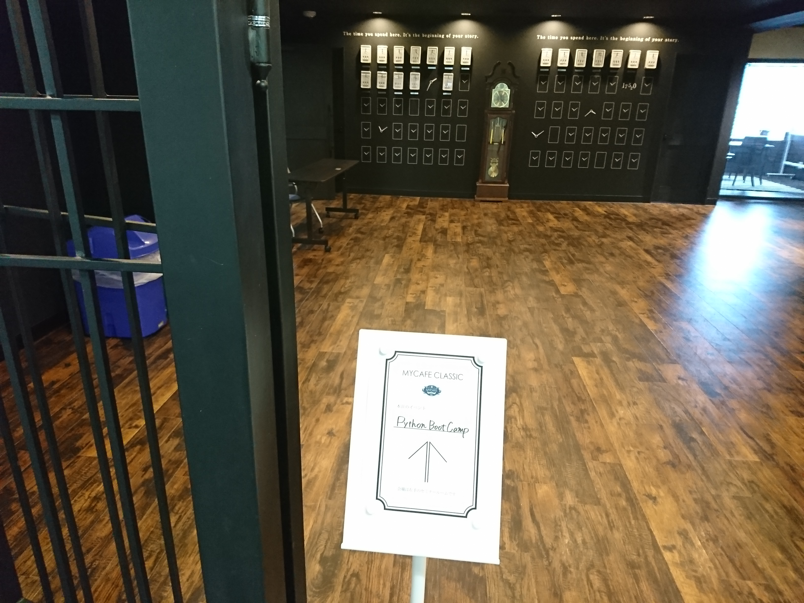

「Python Boot Camp in 愛知」に TA で参加してきた
7月29日(土) にあった「Python Boot Camp in 愛知」に TA として参加してきました．

ちょっと時間経っちゃったけど，感想とかを書き残しておく(TAなので何か特別なことをしたわけではないけどね)．
まぁ TA しようか迷ってる人が読んで，後押しになってくれれば幸いです．
Python Boot Camp とは
(上述した connpass のリンク先にある説明を読めばわかると思いますが…)
一般社団法人 PyCon JP が企画している，Python 未経験者向けの勉強会である． PyCon JP が企画してるとはいえ，どこでやるかの発案者は地元の方がやってるようだ． 地元の Python プログラマ(別にプログラマじゃなくてもいいのかも)が PyCon JP に「やりたい」と声をかけて，費用と講師を工面してもらうという感じみたいだ(間違っていたらゴメンなさい)．
内容は，講師が違うだけで毎度同じなのかな？ テキストは Web 上に公開されている．
中身は
- インストールガイド
- FizzBuzz で例
- データ型
- ファイル操作とモジュール
- パッケージ管理と仮想環境(venv)
- 例: Webスクレイピング
と言った感じで非常にコンパクト． 敢えてクラスを登場させてないみたいだ．
いきさつ
PyCon JP に参加したことがあるため，PyCon JP が connpass で新しくイベントを企画すると通知が来る． 近所の名古屋でやるということで，ぜひ参加したいと思った．
ただし，Python は常に使ってはいないが，CTF や AWS Lambda をいじるために触ったことはあるし，ググりながらならある程度書ける自信があった． なので，未経験者向けの勉強会に参加するのはいかがなものかと…
いっそのこと TA でいいのかとも思ったが，普段から使っているわけではないし…
と迷ったので PyCon JP に，この旨をメールしてみた． そしたら，
ある程度Pythonに慣れているようですので、TAでの参加をお勧めします。 今回は参加人数が多いので、TAとして参加していただけると、運営としても大変助かります。
と返ってきたので，TA で参加する事にした． ちなみに知ってる人(面識のある人)はいない． でも何とかなったよ．
あとちなみに，Python は好きな言語のひとつです． 「読みやすさ」に重点を置いている設計思想も好きだし，PEP8 でイロイロと書き方が決まってるのは初心者向け，特にプログラミング言語をツールとして使い始めたいという方には適していると思う．
当日
勉強会の開始は13時半からだったが，講師 + TA + スタッフは11時に集まって，昼食(名古屋飯)をとりながら事前に交友した． 勉強会が始まってからは，基本フラフラしながら，参加者から質問を受けて，教えるのの繰り返し．
コアな質問が来たら死ぬなー，と思いながら一応，概ね答えることが出来たと思う． 昼飯時に聞いていた通り，多い質問はコンソール回りだった． python と打っても出てこないとか，.py ファイルを実行するにはどうすれば良いのかとか，venv がダメとか．
たぶんちゃんと答えれなかったのは，Python環境を Visual Studio を使って用意してきた人からの質問かな． そういうインストールの仕方があるのか，と盲点だった． Visual Studio 難しい．
(ちなみにテキストは普通に Python のインストーラーを推奨しているよ，Windows は．)
個人的には「教えるペース少し早いかなぁ」と感じたけど，普通にみんなついて行ってる感じで，完全に杞憂だった． 教え方そのものは非常に分かりやすいと思った． 特に，教えるべきとこ，サラッと流すべきとこ，割愛するべきとこがしっかりしてた気がした． 流石長く続けてるだけはあるなぁ．
最後に質問の時間が設けられてて，だいたい「こういうことしたいけどどうすればいいですか？」とかお勧めパッケージについてだった． こういうことってのは SQL をたたいたり，Exel をいじったりなどだった．
ボクはメモしなかったので具体的な回答は忘れたけど，この前発売したオライリーの「退屈なことはPythonにやらせよう」の後半部分に結構こういうこと書かれてるよ，とお勧めしてた．
感想
楽しかったです． 昼食時や休憩時は名古屋ネタと言うことで，レゴランドや某企業の話が多かった(笑) ボクも Python そのものというより，勉強会ってどう運営するのかを見れてよかったです．
また名古屋で勉強会があれば参加したいなぁと思った．
ちなみに，TA に迷ってる人，基本環境構築やデバッグがある程度できれば問題ない(コアの部分をすごい知ってる必要や，ライブラリを作ったことある必要は無い)ので，どんどん参加した方がいいよ．
あとホントは懇親会も参加しようかと思ってたけど，急な野暮用が入ってしまい断念．
おしまい
PyCon JP 2017 も楽しみ． ちなみに，なんとか Python コミュのこういうところを吸収して Haskell 勉強会をできないかなぁという思惑もありました．